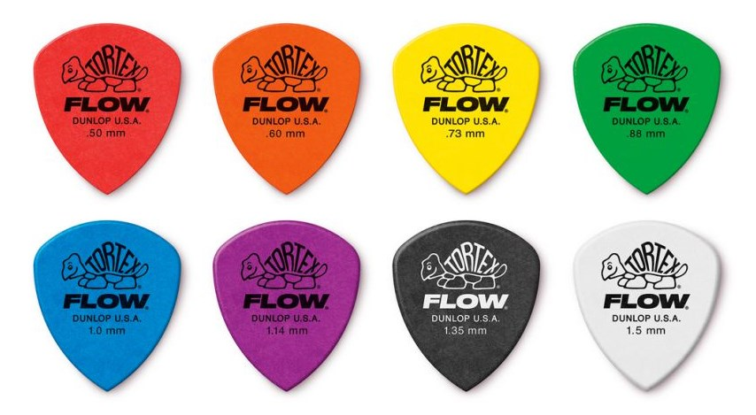
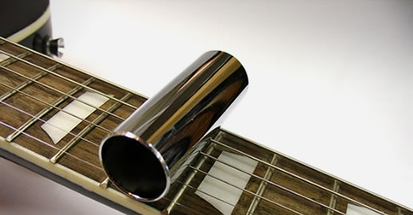
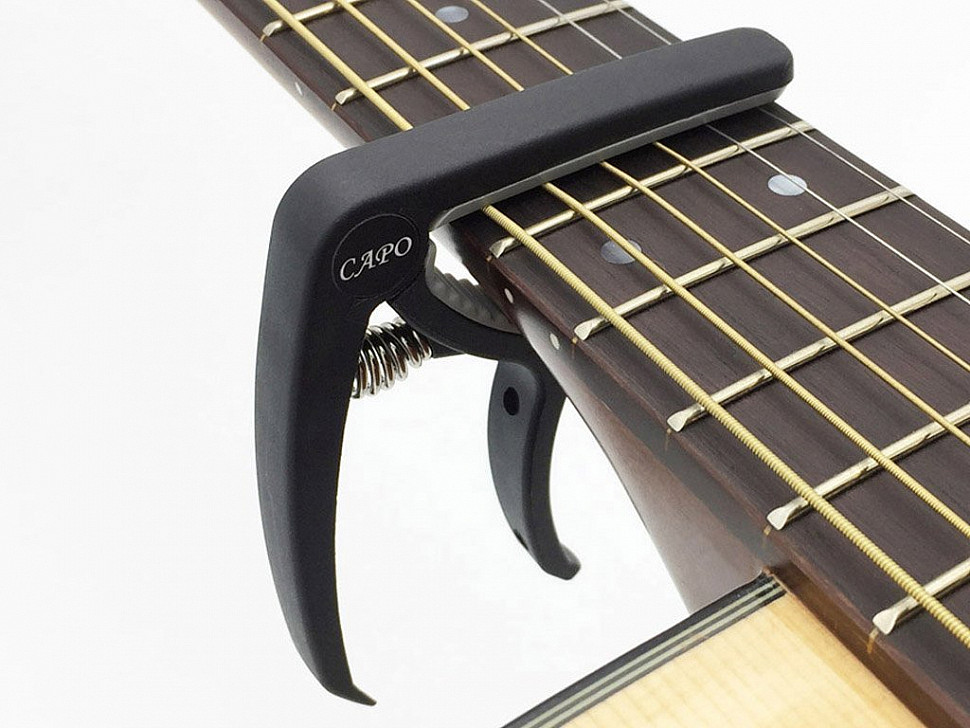
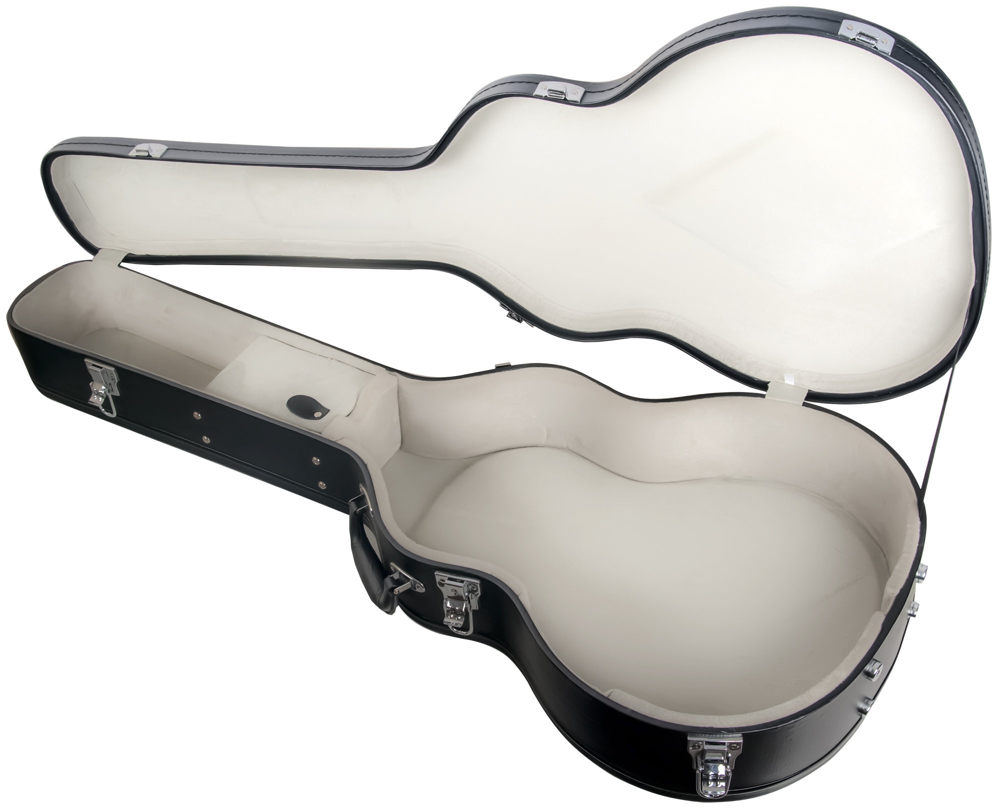
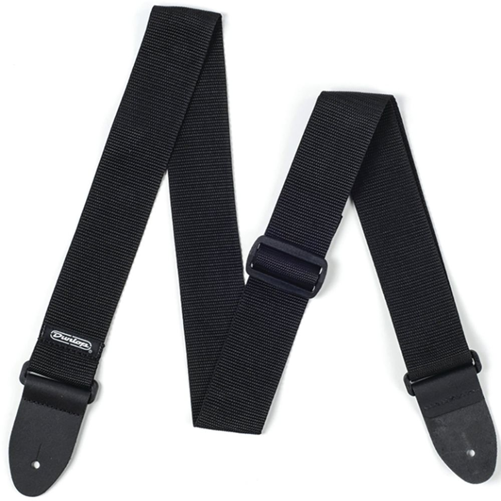
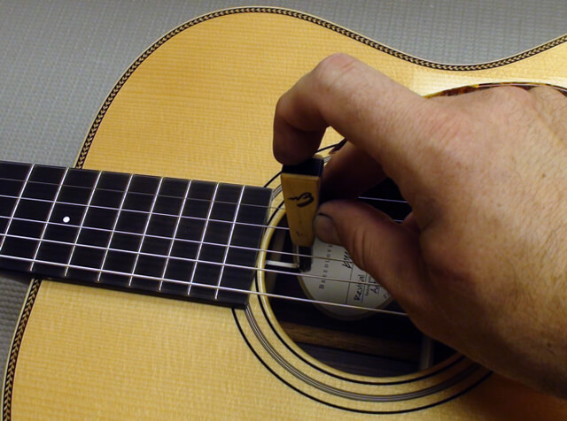

Аксессуары
Плектр (медиатор) — небольшая пластинка (из пластмассы, кости, металла) толщиной 0,1—1 (иногда до 3) мм, используется для звукоизвлечения.
Слайд — полый цилиндр из твёрдого и гладкого материала, в основном из металла или стекла (bottleneck), надеваемый на один из пальцев левой руки; играет роль «скользящего порожка», позволяя не дискретно изменять высоту извлекаемых звуков.
Каподастр — приспособление для постоянного зажатия всех или нескольких струн на одном ладу, для упрощения игры в определённых тональностях, а также для повышения высоты звучания инструмента.
Кофр — мягкий или жёсткий футляр или чехол для хранения и(или) переноски гитары.
Гитарный ремень — ремень из прочного материала (кожа или синтетика), позволяющий гитаристу удобно исполнять композиции стоя.
Шестигранный ключ — «анкерный», для регулировки прогиба грифа (и, соответственно, расстояния между струнами и порожками ладов) у многих современных гитар путём ослабления-натяжения анкерного стержня. Такой же ключ, но меньшего размера используется для непосредственной и точной регулировки зазора между струной и грифом на некоторых моделях электрогитар.
